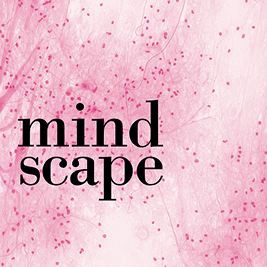
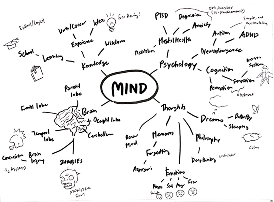
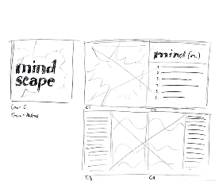
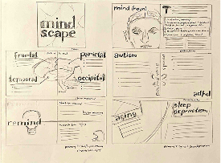

Mindscape
The goal of this project was to create a multi-page publication titled and themed on one word and various interpretations on its meaning and use. We were tasked to complete this project with Adobe InDesign, and were instructed to use a consistent grid layout and limited color scheme throughout our publication. Out of the list of words provided (gravity, scale, bridge, rhythm, mind) I chose mind.
RESEARCH
We began by using mind maps to brainstorm what direction our project would go in. Having some knowledge and interest in the psychological and physiological aspects of the mind, I decided to discuss topics such as the anatomy of the brain, memory, dreams, neurodivergence, and mental health for my publication.
COLLECTING CONTENT
We then proceeded to collect written information and images related to our word and concepts from our mind map to use in our project. The written information I collected from various medical websites. Our professor instructed us to use free images from sites like unsplash.com and pexels.com. These images needed to be made grayscale in Photoshop to make use of InDesign's colorize function.
ROUGH SKETCHES
Next, we created rough sketches of our different concepts. Some of my other concepts featured more graphic and cartoony elements, but I ended up preferring the use of realistic images on top of abstract backgrounds to create a more "clinical" feeling.
As I narrowed down my direction, I created a storyboard for my publication:
MOVING TO DIGITAL
As we moved our work to InDesign, I determined the design system for my project. First, my publication would use a 3-column system throughout its pages. Using a 3-column system allowed me to arrange elements in a logical and orderly manner
Next, I selected the typefaces I would use for my project. I decided to use a pairing of Bodoni and Helvetica. I would use Bodoni for my publication's title and headings, as its bold yet elegant forms brought a level of sophistication to my design. I used Helvetica as a simple and easy-to-read body text.
Finally was my color scheme. I decided to make my publication pink, mainly due to the brain itself appearing pink (due to blood circulation). I used black and white as highlights.